N
NovaERP
High-Performance Manufacturing
Built for the
shop floor.
A keyboard-first, scanner-first ERP unifying procurement, warehouse, manufacturing,
billing, and dispatch — designed for industrial speed and offline reliability.
Avg. scan response <50 ms
Screen switch <200 ms
Offline-ready
Web · Desktop · Mobile
00
Inside this document
What NovaERP delivers
OVERVIEW
NovaERP is an end-to-end manufacturing ERP covering the full cycle — from raw-material
procurement to dispatch — with an aggressive focus on operator productivity.
Every screen is designed for one-handed scanner use, low-click workflows,
and millisecond-scale response times.
3
Platforms (Web / Desktop / Mobile)
319+
Catalog SKUs imported
01
Secure Sign-in & Multi-mode Login
Auth
02
Operational Dashboard
Insights
03
Product Catalog with Variants
Master Data
04
Dynamic Pricing & Price Lists
Sales
05
Quote Management with Revisions
Sales
06
Quote Editor & Line Items
Sales
07
Customer Quote Sharing
Customer-facing
08
Public Quote Viewer
Customer-facing
09
Picking — Bin-level Stock Picks
Fulfilment
10
Packing — Edit-on-Pack Workflow
Fulfilment
11
Live Inventory & ATP
Warehouse
12
Billing & GST Invoicing
Finance
13
Reports & Analytics
Insights
14
Manufacturing Orders Console
Production
15
Enquiries & CRM Pipeline
Sales
16
Transfer Orders & Replenishment
Warehouse
17
Warehouse Layout & Bins
Warehouse
18
MO Detail — Materials & Inventory Trail
Production
19
Putaway Rules (Fixed FG Bins)
Settings
20
Stock Rules — Auto MO & Transfers
Settings
21
Why an ERP — Business Advantages
Closing
01
Authentication
Secure sign-in, three ways
AUTH
Users sign in with password, a 4-digit operator PIN for shop-floor speed,
or a badge scan. The shell remembers warehouse, shift and locale, and the connection state
is shown live so operators always know whether they are working online or offline.
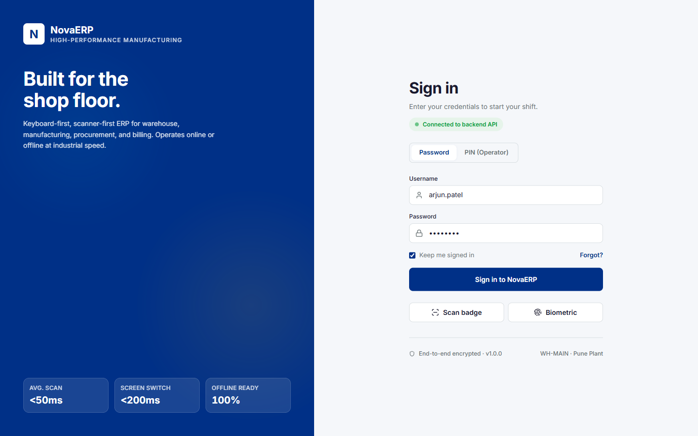
Operator PIN mode
Pre-fills last-used operator so handovers between shifts take seconds, not minutes.
Connection awareness
"Connected to backend API" badge confirms live sync before sign-in.
Badge / biometric ready
Reserved hooks for ID-card scan and biometric for higher-security plants.
Workspace context
Logs you into your warehouse and shift in one tap — no extra picklists.
02
Insights
Single-glance operations dashboard
DASHBOARD
Live KPIs the moment you log in — revenue, order pipeline, fulfilment SLA,
machine availability, attendance, and alerts.
Drilldowns route you straight to the relevant module instead of forcing you through menus.
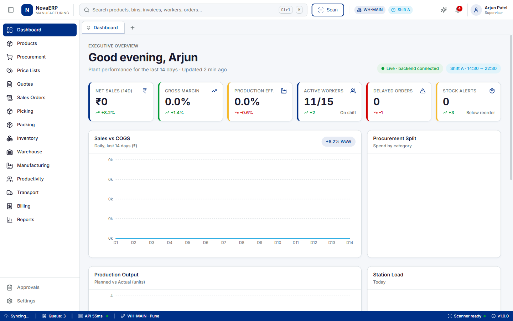
Real-time KPIs
Sales, stock-on-hand, dispatch SLA, manufacturing throughput — refreshed live from the API.
Alert center
Low-stock, overdue POs, credit-limit breaches, picking backlog — never miss an exception.
Shift-aware widgets
Numbers respect the active warehouse and shift so supervisors see only their slice.
Deep links
Every tile is clickable — jump from a KPI directly to the underlying transactional list.
03
Master data
Product catalog with smart variants
PRODUCTS
Items group into product families with short 3-4 letter codes
(e.g. COIL for Coconut Oil, AGRB for Agarbathi) and unlimited variants on
size, scent / flavour, and container / grade.
The MRP and Dealer Excel sheets were imported automatically — with spelling fixes and family-grouping —
yielding 319 production-ready SKUs.
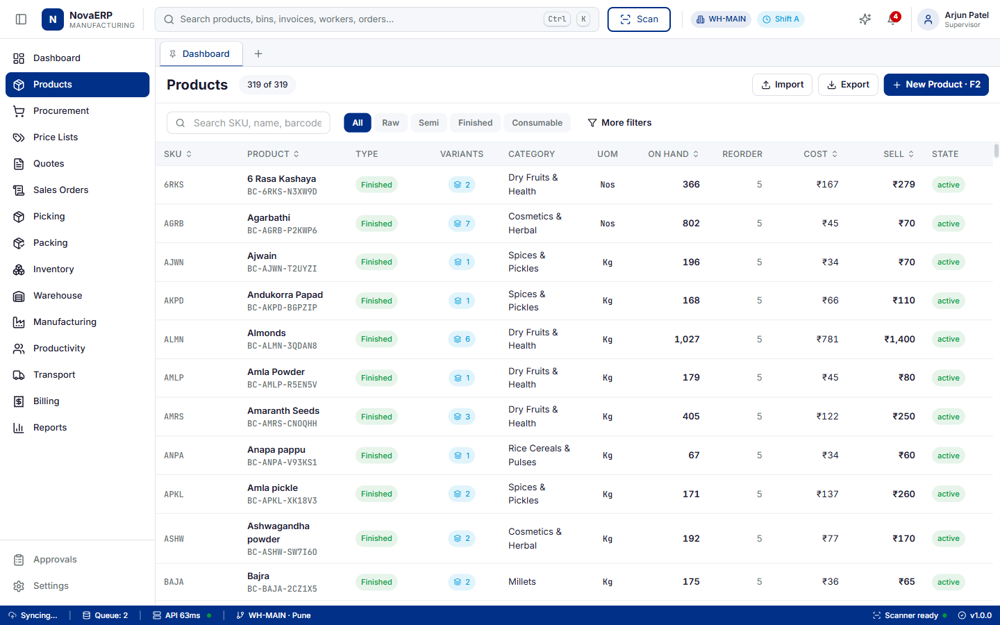
Variant axes
Three independent axes (size / scent / pack) eliminate SKU sprawl while preserving granularity for billing.
Excel import
One-shot import normalises units, fixes typos like "Cardmom→Cardamom", and joins MRP+Dealer rates.
HSN & GST mapped
Tax classification stored at the product level so every invoice is GST-compliant by default.
Inline edit
Edit pricing, packaging, or status from the list without opening a separate form.
04
Sales · Pricing
Dynamic pricing & multi-tier price lists
PRICE LISTS
Every customer is bound to a price list — Retail, Dealer, or
Distributor. Prices resolve through a deterministic waterfall:
explicit override → quantity-break tier → list formula → product default.
Changes propagate instantly to every open quote and invoice draft.
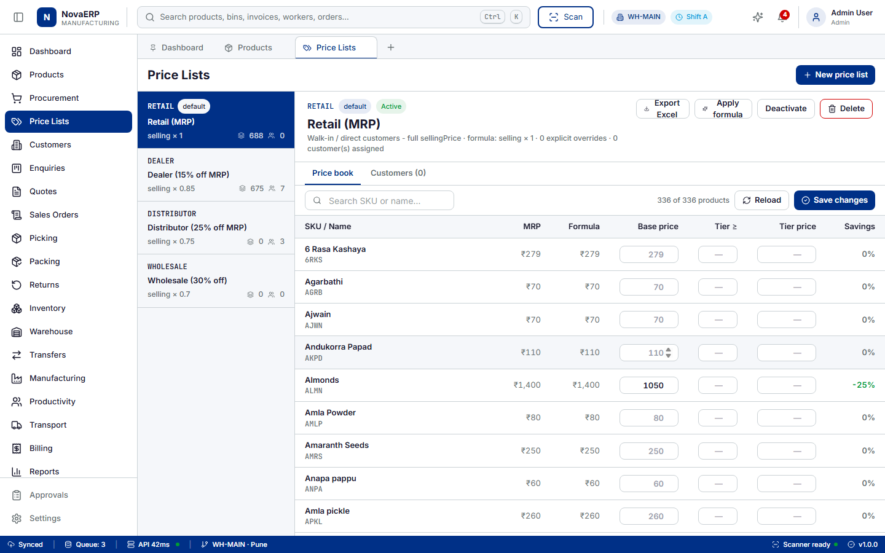
Formula-based tiers
e.g. Dealer = MRP × 0.78. Define once, apply to every product automatically.
Per-SKU overrides
Pin a special price for strategic SKUs without breaking the formula for the rest.
Quantity breaks
"5–9 units: 5% off, 10+: 12% off" — applied as the operator types the qty in the quote.
Currency & validity
Time-bounded promotional price lists with automatic fallback to the standard tier.
05
Sales
Quote management with revision history
QUOTES
The quote list is the sales operations heartbeat — filterable by status
(Draft, Submitted, Accepted, Converted, Expired, Rejected),
with revision badges, expiry countdown, and a one-click Share
action per row.
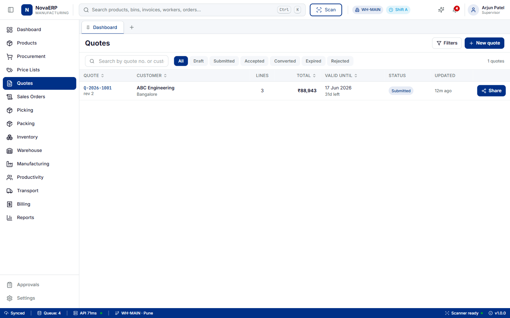
Immutable revisions
Editing a submitted quote auto-snapshots the previous version. Full audit trail, no overwrites.
Validity tracking
Each row shows "31d left" so reps act before quotes go stale; expired quotes drop out of pipeline.
Credit-limit guardrails
Quotes exceeding limit are flagged and routed to Approvals — only those, not every order.
One-click share
Share submitted quotes via Print, link copy, WhatsApp, or Email — without leaving the list.
06
Sales
Quote editor & line-item search
QUOTE EDITOR
A single-screen drawer holds everything an inside-sales rep needs: customer + credit context,
payment terms, a type-as-you-go variant search, live ATP
(Available-to-Promise), GST roll-up, and inline rate / discount.
Submit → automatically becomes a Sales Order and triggers Picking.
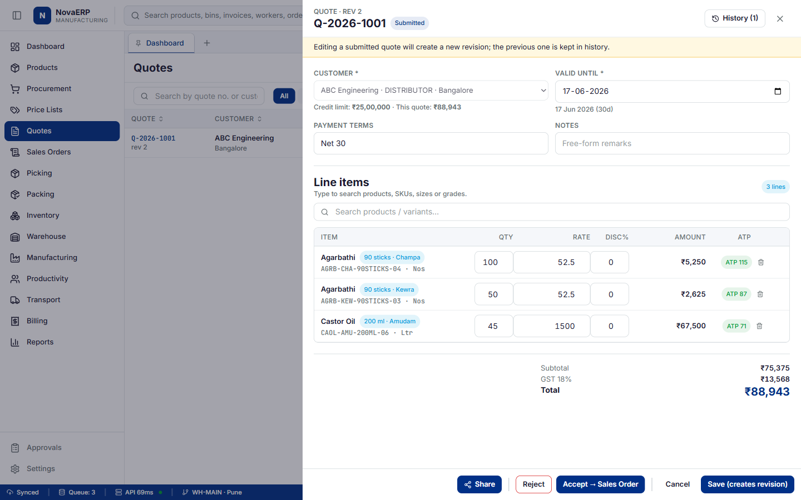
Live ATP
Each line shows real-time stock minus reservations + open POs + open production — no surprises at invoicing.
Variant-aware search
Search "agarbathi champa 90" finds the exact variant in milliseconds.
Auto-pricing
Rate auto-fills from the customer's assigned price list. Overrideable, but defaulted.
Revisions in history pane
Click "History" to diff what changed, who changed it, and when — names resolved, not raw IDs.
07
Customer-facing
One-click quote sharing
SHARE
Hit Share and pick the channel — Print/PDF, copy link, WhatsApp,
or Email. NovaERP mints a tamper-proof token, opens WhatsApp/Mail with a
pre-filled message and embedded link, and lets you revoke & rotate
the token if a quote leaks. Customers don't need a NovaERP login.
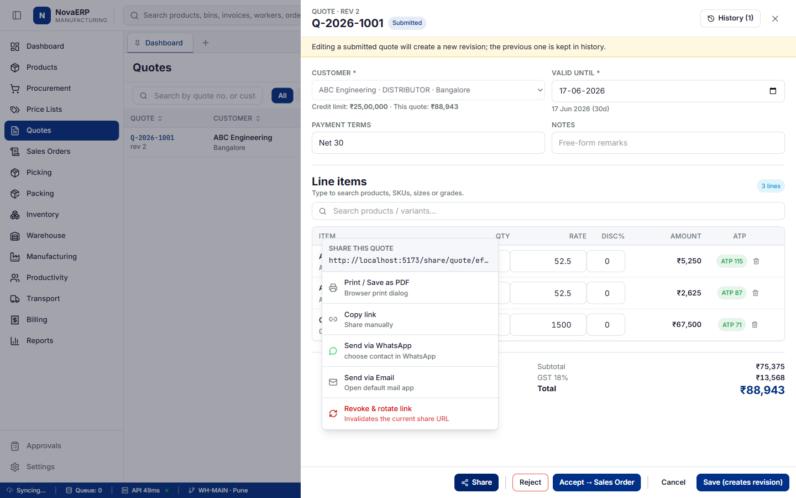
Token-based access
Each quote has an opaque shareToken — rotate to revoke without affecting other quotes.
Pre-filled WhatsApp / Email
Opens the user's WhatsApp / mail client with quote no, total, and link already drafted.
Print-friendly PDF
"Print / Save as PDF" opens an A4 layout optimised for the browser's print dialog.
No data leakage
The public payload is sanitised — internal cost prices, ATP, and audit IDs are stripped.
08
Customer-facing
Public quote viewer
SHARE
The customer opens the link in any browser — no app, no login.
The page renders the quote at print quality with company branding,
line-item breakdown, GST, totals, and a "Print / Save as PDF" button.
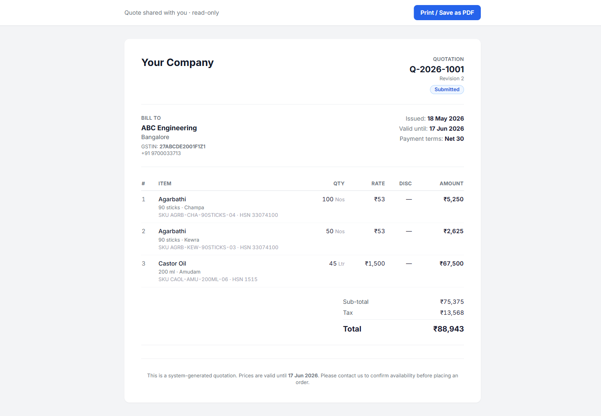
Mobile-friendly
Responsive A4 layout — looks the same on phone, tablet, or laptop.
Auto-print mode
Add ?print=1 to the URL to fire the browser print dialog on load.
Brand-aware
Company name, GST, and address pull from environment config — no per-quote setup.
Read-only & secure
Public endpoint runs outside the auth wrapper but is rate-limited and token-gated.
09
Fulfilment
Picking — bin-accurate stock walks
PICKING
When a Sales Order is confirmed, NovaERP auto-generates a Pick List with
exact bin / shelf locations for every line. Stock is physically reserved
(Bin.reservedQty) so two pickers can't race for the same crate.
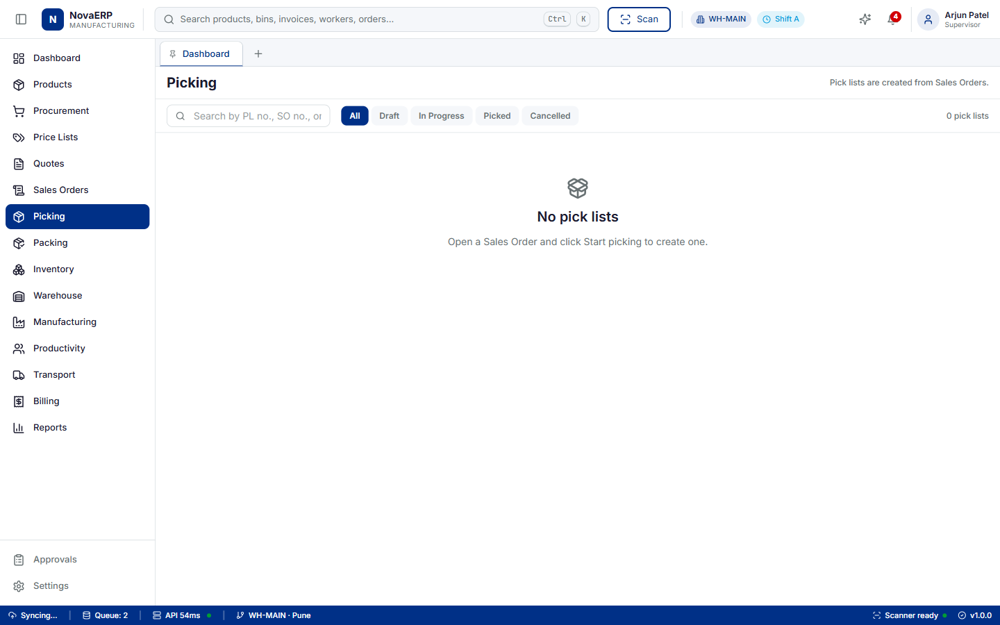
Bin / shelf precision
Each line shows the exact zone/shelf/bin where the requested qty is stored.
Soft-reservation
Reserved qty is decremented from ATP immediately to prevent oversell.
Scanner-first UX
Pickers scan bin → scan SKU → enter qty. Three keystrokes, no menus.
Partial picks
Pick what's available now, balance auto-creates a back-order line for procurement.
10
Fulfilment
Packing — invoice the actual packed qty
PACKING
Manufacturing rarely packs exactly what was ordered.
NovaERP exposes edit-on-pack: the packer adjusts qtyPacked
per line, and the invoice is generated from the actual packed quantity — not the ordered one.
Variances roll forward into a back-order automatically.
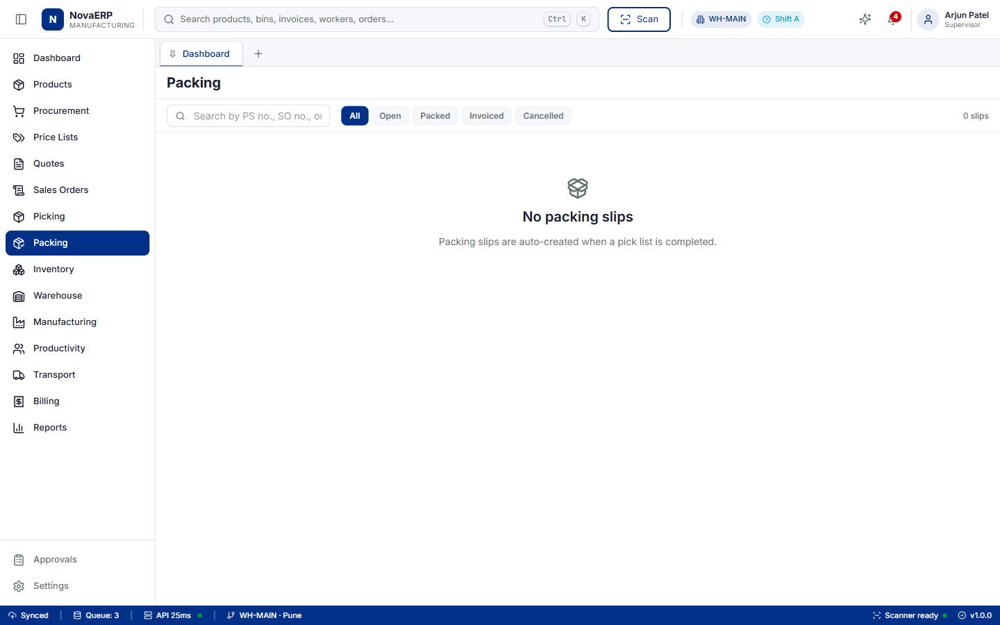
qtyPacked = invoice qty
Removes manual reconciliation between dispatch and finance — what shipped is what's billed.
Carton / case tracking
Capture carton count, weight, and dimensions for the dispatch label and freight calc.
Auto back-order
If less than ordered is packed, NovaERP creates a follow-up line and notifies sales.
Atomic invoice
Generate Invoice button is one click — stock decrement and document creation happen in one DB transaction.
11
Warehouse
Live inventory & Available-to-Promise
INVENTORY
Stock visibility broken down per SKU, per warehouse, per bin —
with running ATP that subtracts open reservations and adds expected inbound
(POs in transit + active work orders). One screen, no spreadsheets.
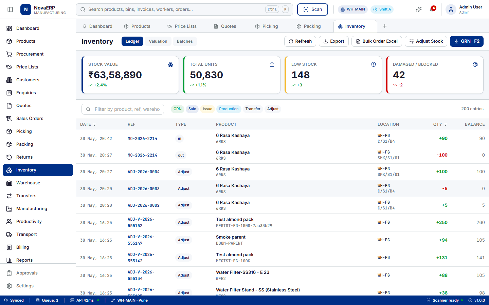
ATP formula
onHand − reservedForSO + openProcurement + openProduction. Always live.
Bin-level drilldown
Click a SKU to see exactly which bins hold it, with batch / lot numbers.
Low-stock alerts
Reorder points trigger procurement suggestions and notifications.
Cycle-count support
Scan bins to confirm counts — variances post adjustments with audit trail.
12
Finance
Billing & GST-compliant invoicing
BILLING
Invoices are produced two ways — from a packed sales order (B2B), or directly through the
POS for cash-and-carry. All invoices auto-number per fiscal year (INV-2026-####),
capture HSN-level GST splits, and post to inventory in one atomic transaction.
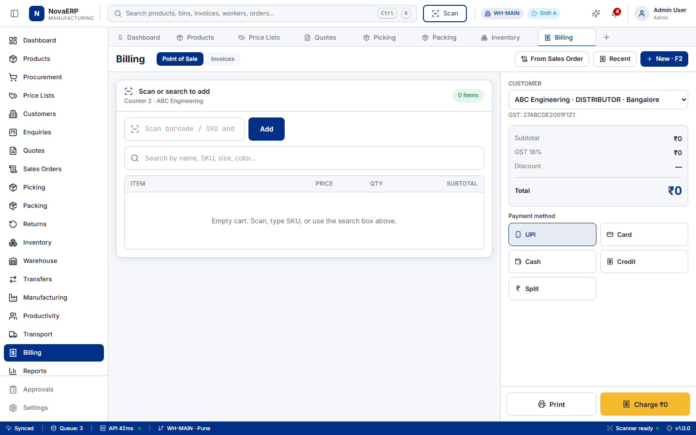
POS for walk-in
Single-screen, scanner-driven POS for cash counter / wholesale outlet.
GST math, baked in
CGST/SGST/IGST split by ship-to state. Round-off configurable per row.
e-Invoice / e-Way ready
Output shape compatible with IRP & e-Way bill APIs for India.
Atomic stock-out
Invoice creation decrements bin stock in the same transaction — no half-states.
13
Insights
Reports & analytics
REPORTS
Sales pipeline, stock ageing, production yield, dispatch SLA, and worker productivity —
visualised with drill-down charts and exportable to CSV. All reports are scoped by warehouse and date range.
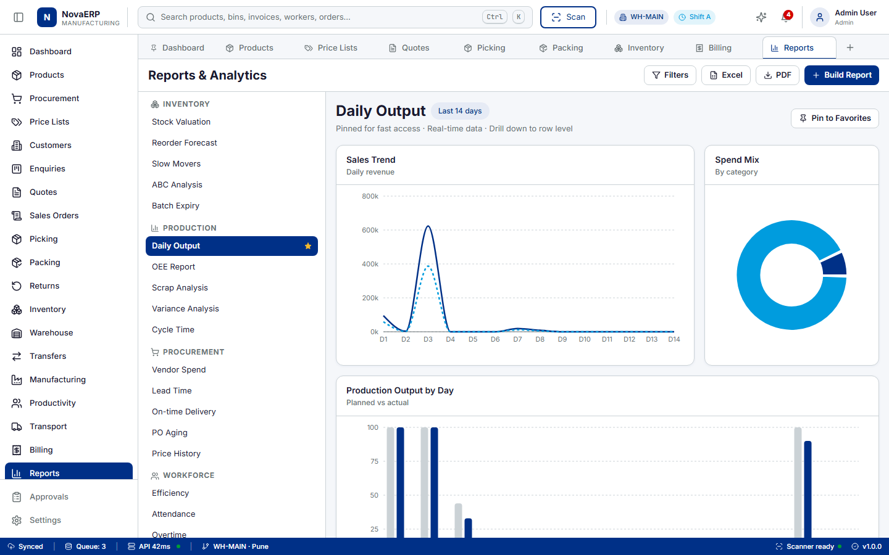
Sales analytics
Top customers, top SKUs, conversion funnel quote → SO → invoice.
Inventory ageing
Slow-movers and dead stock identified at the bin level — perfect for clearance pricing.
Production yield
Output vs target per work-order, per station, per shift, per worker.
Exportable
Every chart has a CSV download — paste into Excel or feed your BI tool.
14
Production
Manufacturing orders console
MANUFACTURING
Plan and run production orders (MOs) from a split console: active orders on the left,
BOM-driven actions on the right. The flow is Release → Issue materials → Log output → Complete,
with smart button states so operators cannot double-issue or complete without output.
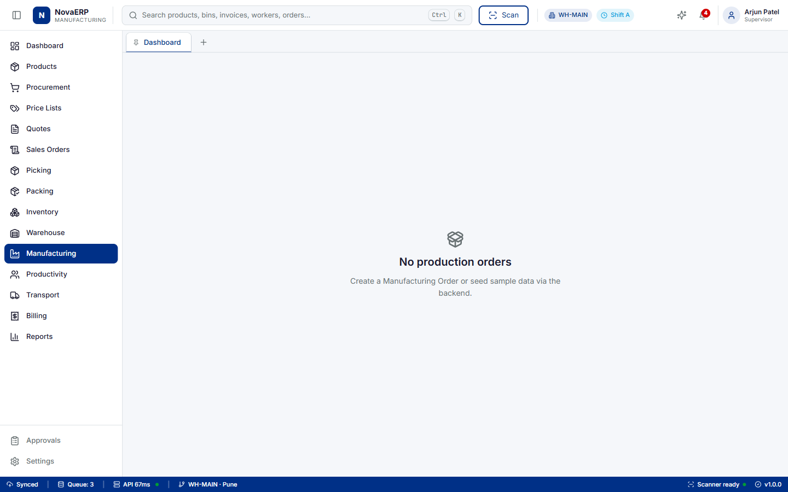
Release & replenishment
Release creates transfer orders from storage to the production-line warehouse when line stock is short.
Issue-aware requirements
Shortage is computed against still needed after issue — not full BOM vs bins post-issue.
Putaway on complete
Finished goods post to configured putaway bins; optional putaway TO when line WH ≠ storage WH.
Productivity tab
Station throughput and worker output in the same module for shift supervisors.
15
Sales · CRM
Enquiries pipeline
ENQUIRIES
Capture inbound interest before it becomes a quote. Enquiries track source, contact, product interest,
and stage — so inside sales can qualify leads and convert winners into formal quotes without re-keying data.
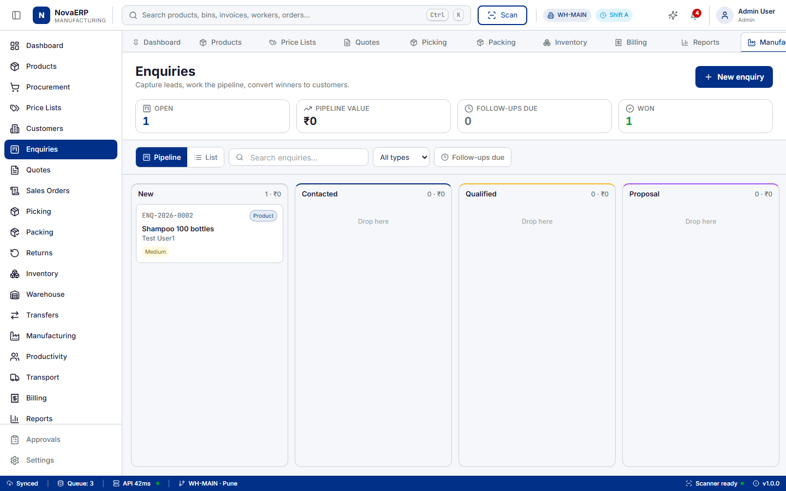
Kanban-style stages
Move enquiries from new → contacted → qualified → won/lost with full history.
Quote conversion
One-click path from a qualified enquiry into the quote editor with customer context carried over.
Assignment & ownership
Each row shows the responsible rep so pipeline reviews stay accountable.
Search & filters
Find open enquiries by customer, product family, or date range in seconds.
16
Warehouse
Transfer orders
TRANSFERS
Move stock between bins and warehouses with auditable transfer orders.
Kinds include replenishment (storage → line), putaway (line → storage), and manual moves.
Team tags route tasks to the right crew on mobile.
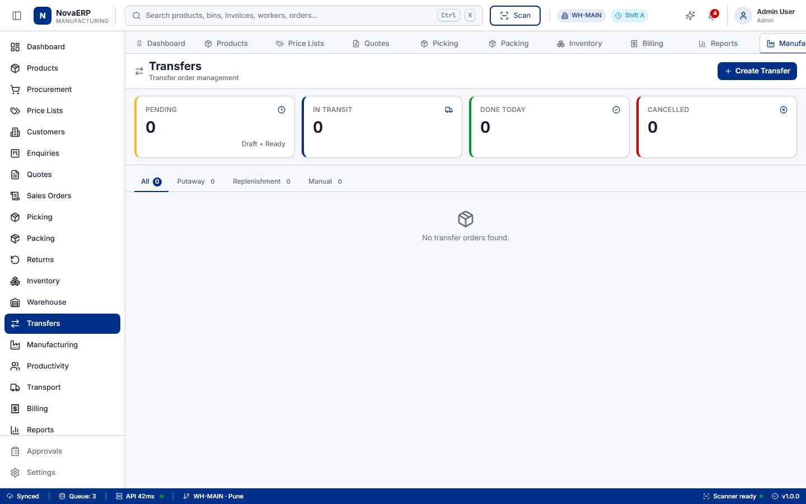
MO-linked TOs
Release and Complete on manufacturing orders auto-create the right transfer documents.
Pick / drop lifecycle
Mobile pick decrements source bins; drop increments destination — both write ledger rows.
Team tags
Comma-separated tags on auto-replenishment TOs for cold-storage, night shift, etc.
Stock-rule triggers
Min-qty rules can spawn ready-to-run replenishment TOs when monitor bins run low.
17
Warehouse
Warehouse layout & bins
WAREHOUSE
Model every site as warehouse → zone → shelf → bin with scan codes
(B.WH-MAIN.A.S1.01). The tree view shows occupancy, capacity, and product assignment —
the foundation for picking, putaway, and cycle counting.
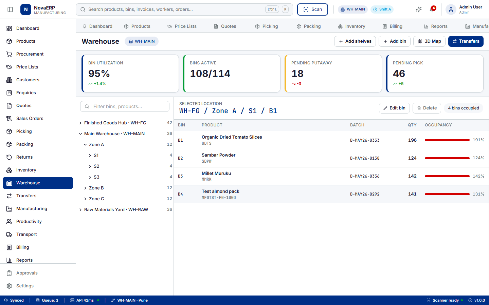
3-level hierarchy
Simplified zone/shelf/bin model — no redundant rack layer — faster scans and labels.
Production-line WH
Each work center can own a dedicated production warehouse for line-side stock.
Bin labels PDF
Bulk-print location labels with embedded scan codes for floor rollout.
Capacity hints
Capacity per bin guides receive and putaway without overfilling a slot.
18
Production
MO detail — inventory trail
MANUFACTURING
Drill into any MO to see material requirements (required / issued / still needed / shortage),
linked transfer orders, and an inventory locations card built from the stock ledger —
where materials were consumed and where finished goods landed.
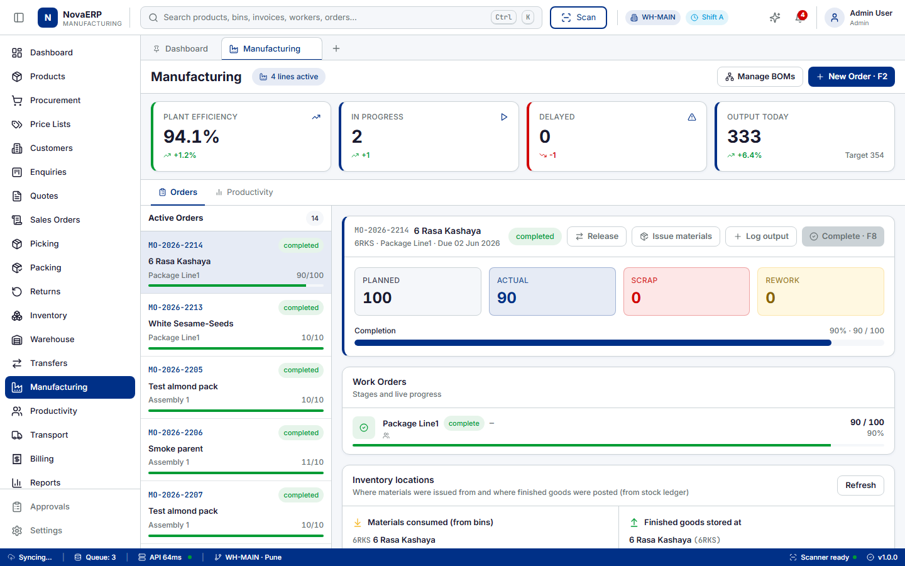
Issue guardrails
Issue disables when all materials are issued; Release only while status is planned.
Adjust from shortage
Deep link from a shortage row straight into Inventory Adjust with product pre-filled.
Ledger-backed trail
Every Issue and Production posting shows bin path and qty — MO is workflow, bins hold stock.
Work orders
Multi-stage routing with per-stage progress bars on the same detail screen.
Every finished variant can map to a fixed destination bin. On MO complete, NovaERP resolves
putaway first — direct post when co-located, or FG on the line plus a putaway transfer when storage is elsewhere.
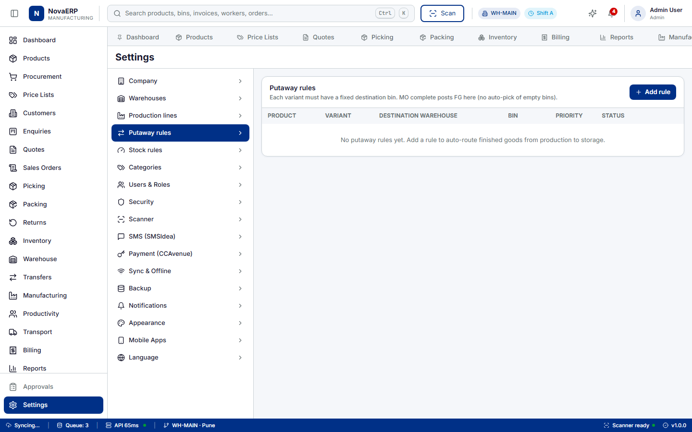
Variant-specific
Rules can target a variant or fall back to product-level when variant is blank.
Required bin in UI
Operators must pick a destination bin — no silent auto-assign to empty slots.
Priority ordering
Lower priority number wins when multiple rules match the same SKU.
Complete integration
MO Complete uses resolvePutawayDestination before any fallback warehouse pick.
20
Settings
Stock rules — automation
SETTINGS
Monitor a bin's on-hand qty against a minimum. When stock drops below, NovaERP can auto-create a
planned manufacturing order (batch size = BOM output qty) or a replenishment transfer
with team tags. Rules fire on issue, sale, adjust, and transfer pick/drop.
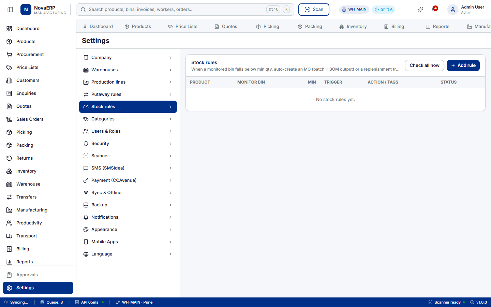
MO trigger
Creates a planned MO from the configured BOM; skips if an open MO already exists for that BOM.
Transfer trigger
Pulls from a source bin to the monitor bin (or explicit destination) with shortage qty.
Check all now
Manual sweep across every active monitor bin — useful after bulk imports or go-live.
Dedup by design
Open MO/TO guards prevent duplicate automation storms on the same rule.
21
Closing
Why implement an ERP — the business case
ADVANTAGES
Beyond the features, the real return comes from the operating model an ERP enforces:
one source of truth, fewer manual hand-offs, and
real-time decisions at every level. Industry studies (Panorama, Aberdeen,
Nucleus Research) consistently report these gains within 12–18 months of go-live.
01Single source of truth
End the war of spreadsheets. Sales, procurement, production, and finance all read and write to the same dataset, eliminating reconciliation overhead.
02Faster cash conversion
Quotes → orders → invoices flow in minutes instead of days. Aberdeen reports a 22% reduction in order-to-cash cycle after ERP rollout.
03Inventory accuracy ↑ 25–40%
Bin-level tracking + cycle counting drives accuracy past 98%, freeing working capital and slashing carrying costs.
04Lower operational cost
Automated workflows replace data entry. Panorama's 2024 ERP report shows 19% reduction in administrative cost.
05Better customer experience
Reps quote with live stock visibility, dispatch promises hold, and customers receive shareable digital quotes & invoices instantly.
06Regulatory compliance
GST, HSN, e-Invoice, and e-Way bill handled natively. Audit-trail per document satisfies statutory and internal audits.
07Data-driven decisions
Real-time KPIs replace gut feel. Identify slow-movers, bottleneck stations, and credit-risk customers in seconds.
08Scalable foundation
Add warehouses, plants, or product lines without re-architecting. NovaERP's modular design grows with the business.
NovaERP is ready today.
Catalog, pricing, quote-to-cash, bin-level warehouse, manufacturing with putaway rules,
stock automation, and CRM enquiries — operational on web and mobile warehouse PWA.